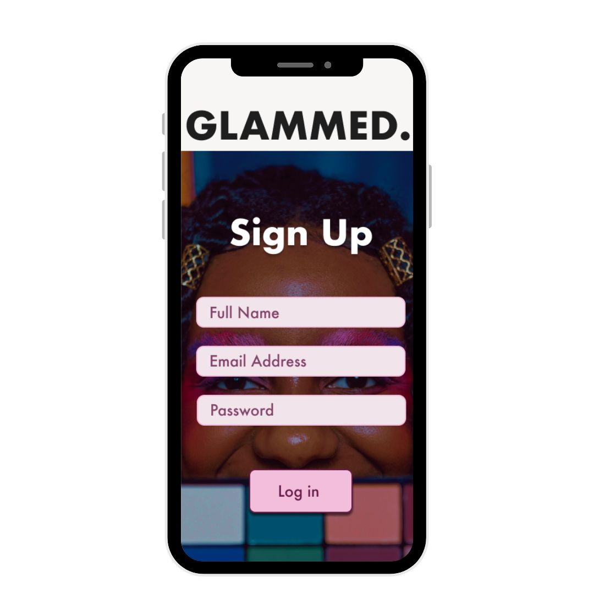
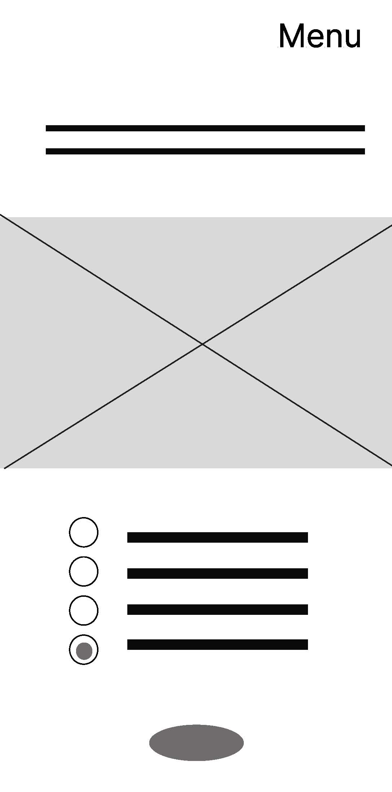
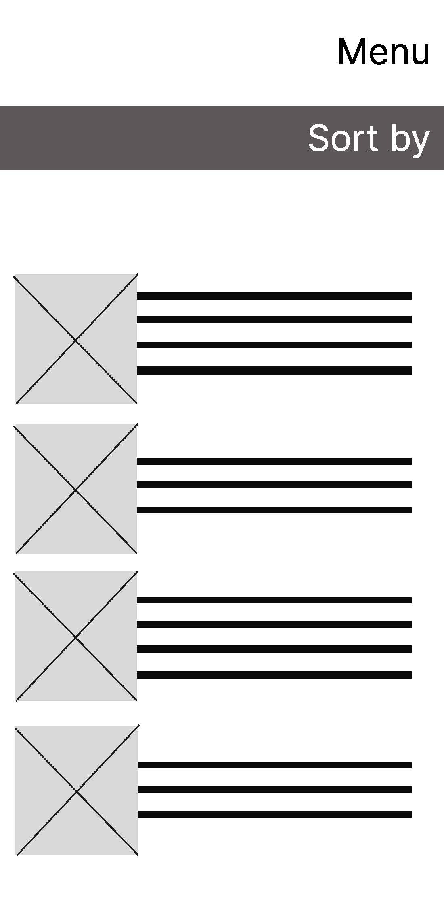
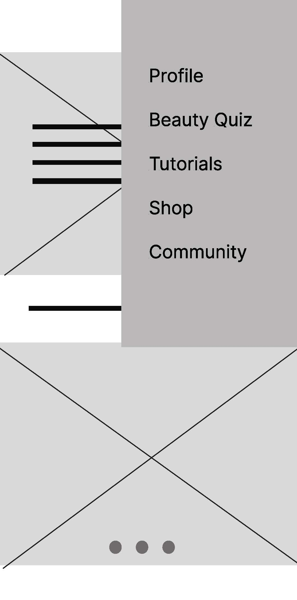
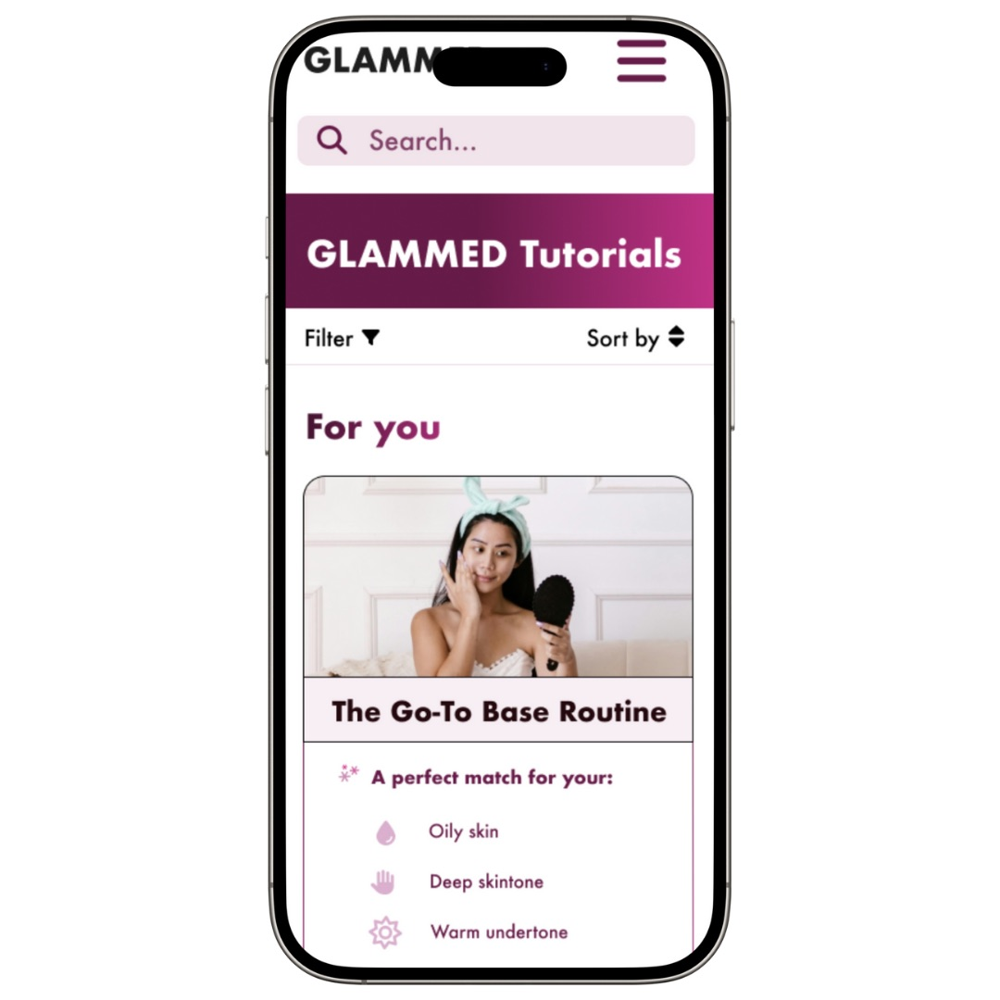
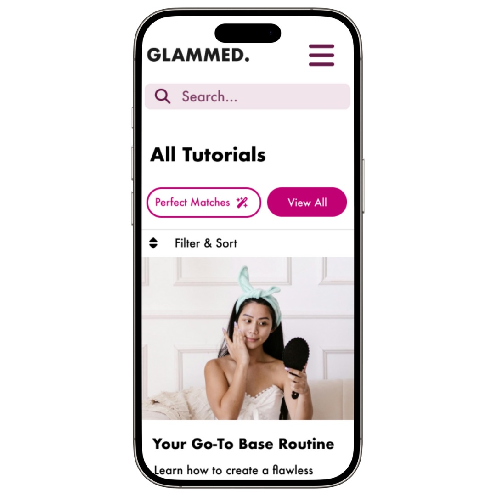
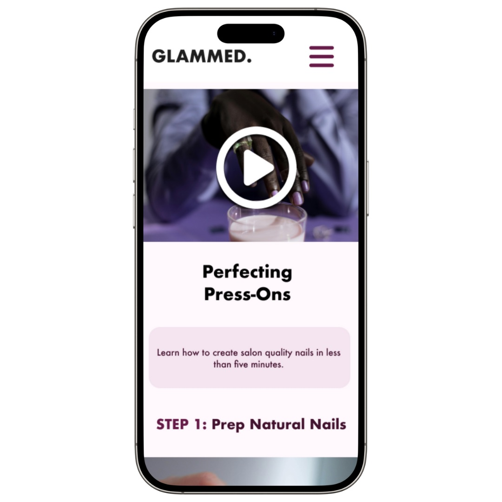

Explore Other Projects

Pillzy
A medication management mobile app for users aged 18-24.

Thrift Finder
A community-driven app for thrift enthusiasts.

Glammed is more than just a beauty app—it's a platform designed to celebrate individuality and empower users to feel confident in their beauty journey. By offering inclusive tutorials and a user-friendly interface, Glammed ensures that everyone, regardless of gender or skill level, can explore and express their unique style.
Problem: Users often feel overwhelmed by generic tutorials and products that don’t align with their unique features or learning styles.
Goal: Create a platform that offers inclusive tutorials and accessible features, making beauty exploration empowering for everyone.
Methods: Competitive audits, personas, empathy & journey maps
Main Pain Points:
The wireframes focused on creating an intuitive layout with clear navigation and engaging visuals. Tutorials were designed to include both video and text options for accessibility, with expandable menus and side navigation for ease of use.



Designing Glammed was a collaborative process, shaped by user feedback at every stage. Testing revealed opportunities to improve navigation, enhance tutorial accessibility, and make the app more inclusive.
What I Learned: Users valued the inclusive tutorials but wanted clearer navigation and more flexible learning options.
Key Design Changes:
The final design of Glammed is a reflection of the feedback and insights gathered throughout the design process. It’s not just a beauty app—it’s a platform that empowers users to embrace their individuality and explore beauty on their own terms.
By incorporating inclusive tutorials, high-contrast visuals, and a calming color palette, the design ensures accessibility and usability for all. The addition of a dedicated tutorial library and customizable learning paths allows users to navigate their beauty journey with confidence and ease.



Click the link below to view the interactive prototype of Glammed.
A medication management mobile app for users aged 18-24.
A community-driven app for thrift enthusiasts.